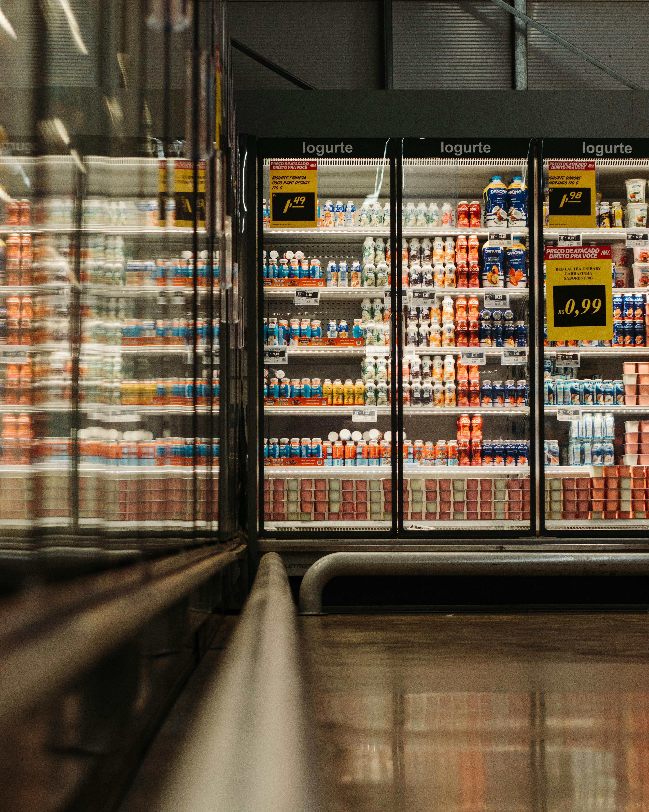

Estudante de ADS e desenvolvedor backend em constante evolução, focado em arquitetura de software e construção de APIs RESTful escaláveis. Atualmente, aplico padrões de projeto (Design Patterns) e princípios de Clean Architecture, transformando conceitos acadêmicos em projetos reais. Meu objetivo é garantir sistemas resilientes, testáveis e de alta performance através de uma modelagem de dados sólida e código limpo.
Sistema backend desenvolvido com NestJS, contendo CRUD completo, autenticação e integração com banco de dados MariaDB.
NestJS • TypeORM • MariaDBProjeto com diferentes níveis de acesso para moradores, síndicos e porteiros, utilizando controle de permissões e autenticação.
Java • Spring Boot • MySQLAPI REST completa com implementação de métodos HTTP, validações de dados e integração com banco de dados relacional.
NestJS • Prisma • MySQL
Projeto Fullstack em PHP com desenvolvimento backend, integração com banco de dados MySQL e construção do frontend da aplicação.
PHP • Laravel • MySQLTelefone: +55 (43) 9 9193-3581
Email: Leandrorecione31@gmail.com
GitHub: github.com/leandrorecione
LinkedIn: linkedin.com/in/leandro-recione-5b6567345/